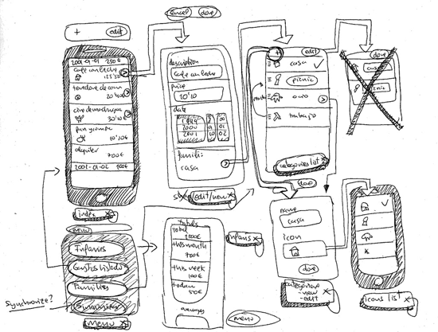
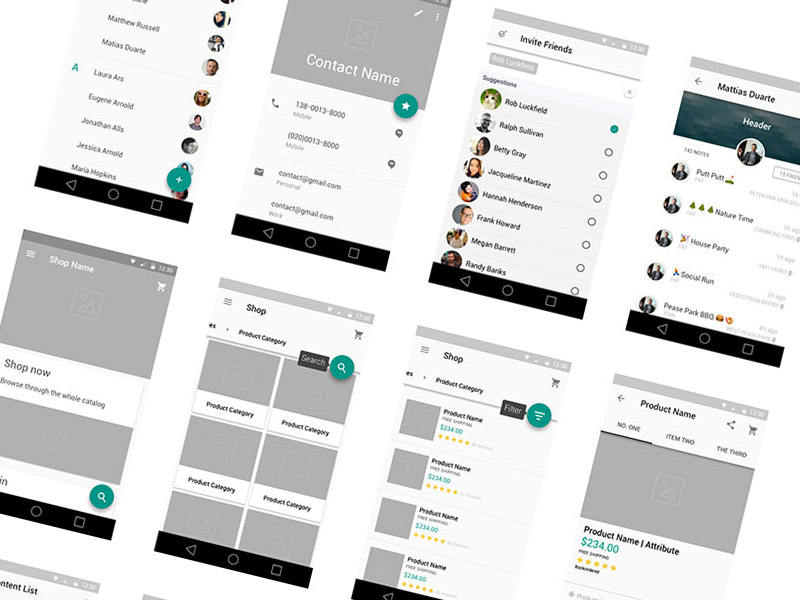

一般設計流程

1.) Wireframe（線框圖）
保真度低（low fidelity ）、修改成本 - 低。適合初期討論產品架構和基本功能。通常使用紙筆手繪，但建議於完成後電子化

2.) Mockup（視覺稿）
保真度中（middle fidelity ）、修改成本 - 中。於 Mockup 階段著重於整體視覺、排版的靜態討論和確認

推薦 Sketch
3.) Prototype（原型）
保真度高（high fidelity ），接近最終產品、修改成本 - 高。確認互動設計的流程並確認架構和視覺規劃是否有需要調整之處
推薦 flinto
//– 以下是 flinto 的示範影片